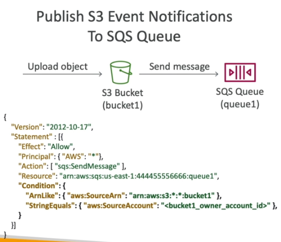

Simple Queue Service¶
Overview¶
- Simple Queue Service.
- Two queue types - Standard, and FIFO.
SQS - Standard Queue¶
- Fully managed.
- Use to decouple applications.
- Unlimited throughput & queue size.
- Default message retention period is 4 days, maximum is 14 days.
- Low latency (< 10ms public and recieve).
- 256KB message size limit.
- Messages can be duplicated, and be delivered out of order (delivered at least once, best effort ordering).
- After a message has been re-queued multiple times, it can be moved to the Dead Letter Queue (DLQ).
Producers¶
- Send messages to a SQS queue using the
SendMessageAPI. - Message is persisted until a consumer deletes it.
Consumers¶
- Poll message queues, process the messages, and deleted them off the queue.
- Running on EC2,Lambda or on-prem infrastructure.
- Recieves upto 10 messages at a time.
- Delete messages using the
DeleteMessageAPI. - Each SQS queue can have multiple consumers recieving and processing messages.
- Horizontal scaling to increase message throughput.
- CloudWatch metric is available called
Queue Length, which can be used to increase/decrease the capacity of the ASG based on the volume of messages.
Security¶
- Encryption during transit using HTTPS (enabled by default).
- Encryption at rest using KMS.
- Client-side encryption is supported.
Access Policies¶
- Similar to S3 bucket policies.
- Useful for cross-account access or allowing other services to write to a SQS queue.

Message Visibility Timeout¶
- Default message visibility timeout is 30seconds.
- Maximum message visibility timeout is 12hrs.
- Once a message is polled by a consumer, it's invisible to other consumers.
- Once the visibility timeout is reached, the message will be put back into the queue and made visible to consumers.
- Use the
ChangeMessageVisibilityAPI from the consumer when it needs more time to process a message. - If visibility timeout is too high and the consumer crashes, it will take a long time to re-process the message.
- If visibility timeout is too low, it may generate duplicate messages.
Dead Letter Queues¶
- Can set a
MaximumReceivesthreshold limiting how many times the queue can go back into the queue. - When threshold is reached, message will be moved to the Dead Letter Queue (DLQ) where another app can be used to analyse the message and debug why it wasn't processed.
- DLQs are subject to retention periods, best practise is to set it to the maximum of 14 days.
Delay Queues¶
- Delay a message before making it visible to consumers.
- Maximum delay is 15mins.
- Can set a default delay at the queue level.
- Can override the default on specific messages using the
DelaySecondsparameter.
Long Polling¶
- Consumer waits for messages to arrive if there's none in the queue.
- Decreases the number of API calls made to SQS.
- As soon as SQS recieves a message, it will send it to the Consumer.
- Wait time can be between 1-20secs.
- Enabled at the Queue level, or at the API level using
WaitTimeSeconds. - Should be preferred to short polling.
SQS Extended Client¶
- Java library that uses an S3 bucket too store large messages, to work-around the 256KB size limit.
Important APIs¶
| API | Description |
|---|---|
CreateQueue |
Creates a queue, use MessageRetentionPeriod to define retention period. |
DeleteQueue |
Delete a queue. |
PurgeQueue |
Delete all the messages in a queue. |
SendMessage |
Used by producer to send a message. Use DelaySeconds to control the message delay. |
ReceiveMessage |
Used by consumer to receive a message. |
DeleteMessage |
Used by a consumer to delete a message. |
ReceiveMessageWaitTimeSeconds |
Used by a consumer to recieve a message using long polling. |
ChangeMessageVisibility |
Change the message timeout. |
SendMesage,DeleteMessageandChangeMessageVisibilityhave batch APIs to help decrease costs.
SQS - FIFO Queue¶
- Messages are processed by the consumer in the order they arrived.
- Max throughput is 300 messages/sec, or 3000 messages/sec with batching.
- Exactly-once send capability (removes duplicates).
- Each message needs to specify its group ID, and provide a token (deduplication ID) used for de-duplication.
Deduplication¶
- De-duplication interval is 5mins. If the same message is sent multiple times within 5mins, the duplicates will be deleted.
Deduplication Methods¶
- Content-based deduplication: Based on the SHA256 hash of the message body.
- Explicitly provide a message deduplication id.
Message Grouping¶
- If
MessageGroupIDhas the same value in a FIFO queue, you can only have one consumer, and all the messages are processed in order. - If different
MessageGroupIDvalues are provided, you can group a subset of messages. Each Group ID can have a different consumer to support parallel processing. - Ordering across groups isn't guaranteed.
Last update: June 30, 2021